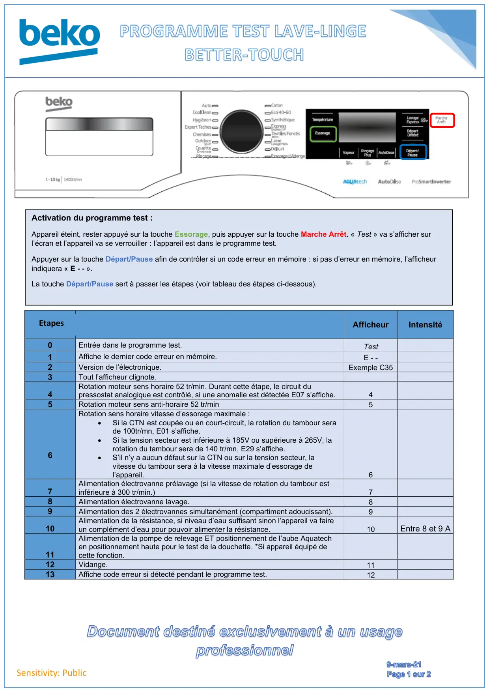
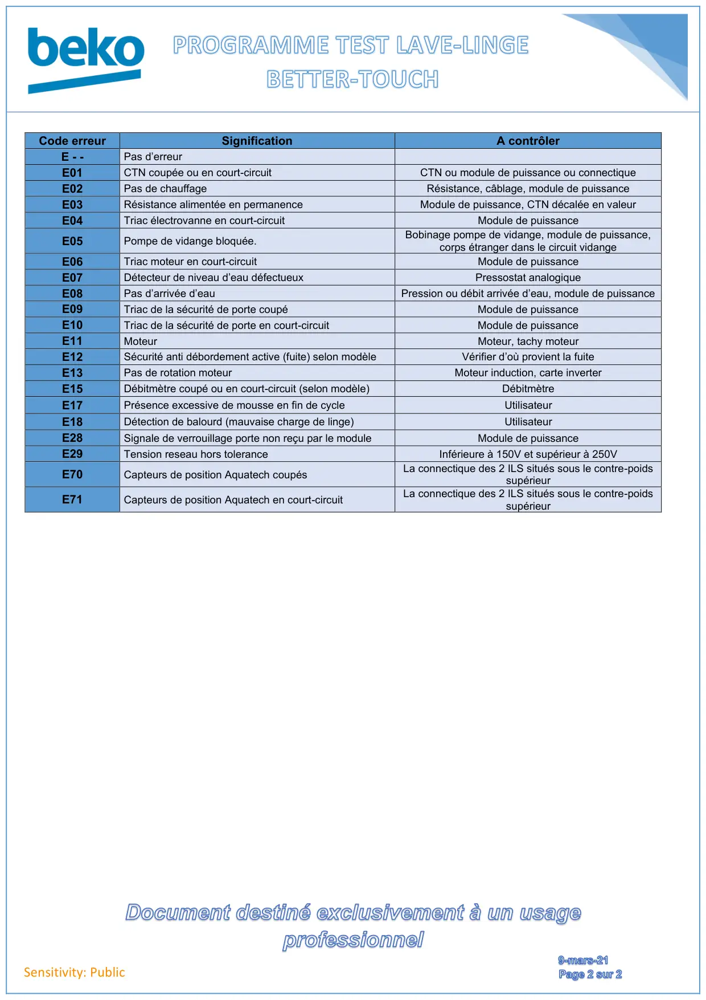

ProgTest lave linge Better Touch Fr

Document destiné exclusivement à un usageprofessionnel9-mars-21Page1sur2Sensitivity: PublicAfficheurIntensité0Entrée dans le programme test.Test1Affiche le dernier code erreur en mémoire.E - -2Version de l’électronique.Exemple C353Tout l’afficheur clignote.4Rotation moteur sens horaire 52 tr/min. Durant cette étape, le circuit dupressostat analogique est contrôlé, si une anomalie est détectée E07 s’affiche.45Rotation moteur sens anti-horaire 52 tr/min56Rotation sens horaire vitesse d’essorage maximale :•Si la CTN est coupée ou en court-circuit, la rotation du tambour serade 100tr/mn, E01 s’affiche.•Si la tension secteur est inférieure à 185V ou supérieure à 265V, larotation du tambour sera de 140 tr/mn, E29 s’affiche.•S’il n’y a aucun défaut sur la CTN ou sur la tension secteur, lavitesse du tambour sera à la vitesse maximale d’essorage del’appareil.67Alimentation électrovanne prélavage (si la vitesse de rotation du tambour estinférieure à 300 tr/min.)78Alimentation électrovanne lavage.89Alimentation des 2 électrovannes simultanément (compartiment adoucissant).910Alimentation de la résistance, si niveau d’eau suffisant sinon l’appareil va faireun complément d’eau pour pouvoir alimenter la résistance.10Entre 8 et 9 A11Alimentation de la pompe de relevage ET positionnement de l’aube Aquatechen positionnement haute pour le test de la douchette. *Si appareil équipé decette fonction.12Vidange.1113Affiche code erreur si détecté pendant le programme test.12Activation du programme test :Appareil éteint, rester appuyé sur la touche Essorage, puis appuyer sur la touche Marche Arrêt. « Test » va s’afficher surl’écran et l’appareil va se verrouiller : l’appareil est dans le programme test.Appuyer sur la touche Départ/Pause afin de contrôler si un code erreur en mémoire : si pas d’erreur en mémoire, l’afficheurindiquera « E - - ».La touche Départ/Pause sert à passer les étapes (voir tableau des étapes ci-dessous).Etapes
1 / 2
Document destiné exclusivement à un usageprofessionnel9-mars-21Page2sur2Sensitivity: PublicCode erreurSignificationA contrôlerE - -Pas d’erreurE01CTN coupée ou en court-circuitCTN ou module de puissance ou connectiqueE02Pas de chauffageRésistance, câblage, module de puissanceE03Résistance alimentée en permanenceModule de puissance, CTN décalée en valeurE04Triac électrovanne en court-circuitModule de puissanceE05Pompe de vidange bloquée.Bobinage pompe de vidange, module de puissance,corps étranger dans le circuit vidangeE06Triac moteur en court-circuitModule de puissanceE07Détecteur de niveau d’eau défectueuxPressostat analogiqueE08Pas d’arrivée d’eauPression ou débit arrivée d’eau, module de puissanceE09Triac de la sécurité de porte coupéModule de puissanceE10Triac de la sécurité de porte en court-circuitModule de puissanceE11MoteurMoteur, tachy moteurE12Sécurité anti débordement active (fuite) selon modèleVérifier d’où provient la fuiteE13Pas de rotation moteurMoteur induction, carte inverterE15Débitmètre coupé ou en court-circuit (selon modèle)DébitmètreE17Présence excessive de mousse en fin de cycleUtilisateurE18Détection de balourd (mauvaise charge de linge)UtilisateurE28Signale de verrouillage porte non reçu par le moduleModule de puissanceE29Tension reseau hors toleranceInférieure à 150V et supérieur à 250VE70Capteurs de position Aquatech coupésLa connectique des 2 ILS situés sous le contre-poidssupérieurE71Capteurs de position Aquatech en court-circuitLa connectique des 2 ILS situés sous le contre-poidssupérieur
2 / 2